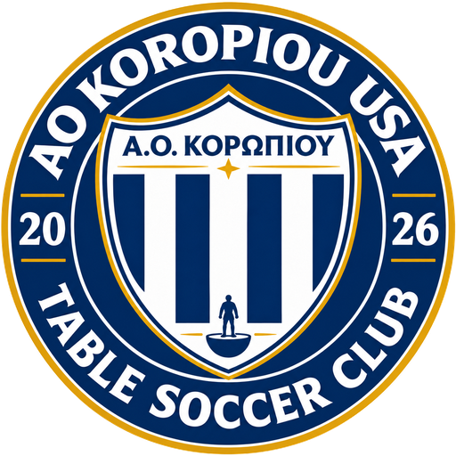

The Club
A Subbuteo table soccer club in DuPage County, Illinois, founded on October 23, 2026 to play the game and promote AO Koropiou.
Subbuteo, played the AO Koropiou way
AO Koropiou USA Table Soccer Club was founded on October 23, 2026. We are a private Subbuteo club in DuPage County, Illinois. We play Subbuteo, also known as table football, and we promote AO Koropiou, the football club of Koropi, Greece.
We look for players of good character, and we welcome beginners who want to learn the game as much as experienced players. Our members are free to play in any table football tournament they choose.
Our motto is AO Koropiou's own: One Neighborhood, One Family.

Subbuteo in Illinois
Subbuteo has been played in Illinois for almost fifty years. Clubs have come and gone; the game has stayed.
- Late 1970sSubbuteo arrives in Illinois
- 1981The Roselle Rowdies, the state's first club, are founded. They fold in 1985.
- 1985–201429 years without an organized club in Illinois
- 2014Chicago Area Subbuteo Club and Hercules Subbuteo Club are founded. On December 14, 2014, they merge to form the Chicago United Table Soccer Club.
- 2016Chicago United TSC folds and the Chicago Table Soccer Club is created
- March 2020Chicago TSC disbands during the COVID-19 pandemic
- Oct 23, 2026AO Koropiou USA Table Soccer Club is founded
Illinois on the Subbuteo map
What Illinois clubs achieved before us, and the standard we want to carry on.
Illinois players have also won several individual tournaments, and Illinois players have represented Team USA at the Subbuteo World Cup.
The organizations behind the game
We support the local, national and international organizations and players who promote Subbuteo table soccer.
The national association for Subbuteo in the USA.
asa-tablesoccer.comThe world governing body of table football.
fistf.comAn international circuit of tournaments for Subbuteo players.
WASPA on FacebookWe promote AO Koropiou
AO Koropiou is the football club of Koropi, in East Attica, Greece, playing since 1903. Its name, crest and colors are ours too. Follow the team's results, news and academy on the official website and on Facebook.
One Neighborhood, One FamilyFrom 1903 until today